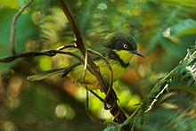

The Taita Hills are, in my opinion, one of the most beautiful places in Kenya for scenic tours, adventure travel, and birdwatching safaris.
Unfortunately, despite their majesty, not many leisure travellers to Kenya know about their attractiveness as a travel destination. In this website, I hope to convince you why you should include the Taita Hills in your next trip to or within Kenya.
The massive rocky outcrops, the lush green vegetation covering the densely populated slopes, the several isolated forests, and the meandering roads up the hills, are just some of the scenic sights of the Taita hills.
The views from the peaks are incredibly beautiful. When the weather is not cloudy, you can see the snow-peaked Mt Kilimanjaro in the distance from such places as Ngangao, Mghange, and Vuria. You also get to enjoy magnificent sweeping views of the Tsavo plains and further afield from Vuria peak.
Owing to their terrain, the Taita Hills are perfectly suited for such adventure activities as mountain biking, hiking and trekking expeditions, and rock climbing.
The rocky cliffs especially near Wesu and Iyale peaks are great for high-adrenaline adventures. It is also probably a matter of time before someone starts organizing paragliding adventures from Vuria peak to the wildlife-filled Tsavo plains.
Three bird species are endemic to Taita hills, you will not see them anywhere else in the world. These are Taita White-eye (Zosterops silvanus), Taita Thrush (Turdus helleri), and Taita Apalis (Apalis fascigularis).
The modern culture of the Taita people may not be as colourful as that of the Masai and Samburu. But the Taita Hills are home to several sites that remind you of the Taita people's rich cultural past.
Arguably, the most significant of these are the skull caves found in many hillsides. Before the arrival of the Christian missionaries in the late 19th century, the Taita people would bury their dead in graves, then exhume their bodies after a year or so.
They would then chop off the corpses' skulls, and take them to sacred caves considered to be the respectful final abode for the dead.
Today, many such caves are still filled with human skulls, and are revered by many of the local people.
Developed by Hoslack Ochieng